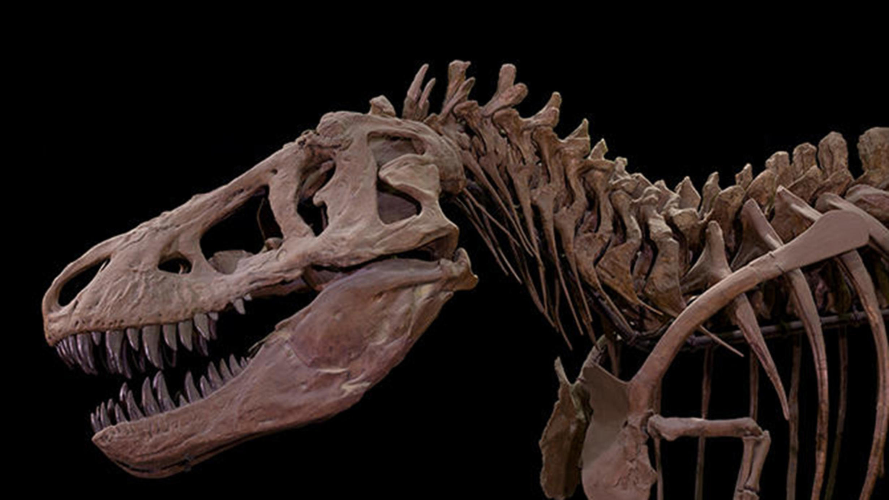

Basic Dinosaur Facts
-
Dinosaurs are a group of reptiles that have lived on Earth for about 245 million years.
-
In 1842, the English naturalist Sir Richard Owen coined the term Dinosauria, derived from the Greek deinos, meaning “fearfully great,” and sauros, meaning “lizard.”
-
Dinosaur fossils have been found on all seven continents.
-
All non-avian dinosaurs went extinct about 66 million years ago.
-
There are roughly 700 known species of extinct dinosaurs.
-
Modern birds are a kind of dinosaur because they share a common ancestor with non-avian dinosaurs.

Paleontology
Paleontologists are like detectives who examine the evidence that extinct animals left behind. Those clues to what dinosaurs were like are found in fossils—the ancient remains of an organism, such as teeth, bone, or shell—or evidence of animal activity, such as footprints and trackways.
Everything we know about non-avian dinosaurs is based on fossils, which include bones, teeth, footprints, tracks, eggs, and skin impressions. For centuries, people throughout the world have discovered amazing fossilized bones and footprints. Early finds inspired legends and fairy tales, as people imagined that these bones belonged to giants or huge monsters.
Some consider Barnum Brown, who began his career at the American Museum of Natural History in 1897, to be one of the greatest dinosaur hunters of the late 19th and early 20th centuries. He began his career at the American Museum of Natural History in 1897. Many of his greatest discoveries, including the first specimens of Tyrannosaurus rex ever found, are on display in the Museum’s dinosaur halls.
Today, in addition to patience and sharp observation skills, paleontologists employ new technologies to solve unanswered questions about dinosaurs and other fossils. Advanced imaging technology, such as CT scans, allow paleontologists to see the three-dimensional structure of fossils, often without having to remove the matrix.
Today, in addition to patience and sharp observation skills, paleontologists employ new technologies to solve unanswered questions about dinosaurs and other fossils. Advanced imaging technology, such as CT scans, allow paleontologists to see the three-dimensional structure of fossils, often without having to remove the matrix.
The Age of Dinosaurs
The earliest known dinosaurs appeared during the Triassic Period (approximately 250 to 200 million ago). Dinosaurs evolved into a very diverse group of animals with a vast array of physical features, including modern birds.
Contrary to what many people think, not all dinosaurs lived during the same geological period. Stegosaurus, for example, lived during the Late Jurassic Period, about 150 million years ago. Tyrannosaurus rex lived during the Late Cretaceous Period, about 72 million years ago. Stegosaurus was extinct for 66 million years before Tyrannosaurus walked on Earth.
During the Mesozoic Era (a period of more than 180 million years that included the Triassic, Jurassic, and Cretaceous periods), a species of non-avian dinosaur evolved into a species of avian dinosaur. This avian dinosaur is the first bird and the forerunner of all birds. Every non-avian dinosaur went extinct 66 million years ago.
There are several theories as to what may have contributed to the mass extinction of non-avian dinosaurs and other species at the end of the Cretaceous Period. It is certain that a massive asteroid or comet struck Earth during this time, causing a dramatic shift in Earth’s climate. Some scientists speculate that this impact had catastrophic consequences for life on Earth. But other factors, including changing sea levels and large-scale volcanic activity, may also have played a significant role in this mass extinction.